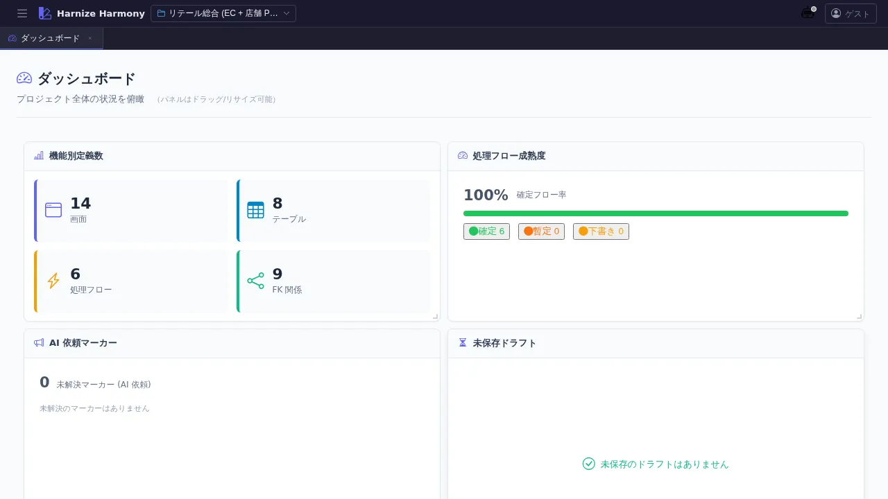

ダッシュボード
対象画面:
DashboardView(frontend/src/components/dashboard/DashboardView.tsx) ルート:/w/:wsId/(workspace 配下のトップ) 種別: シングルトンタブ
概要
プロジェクト全体の状況を一目で俯瞰するパネル集合体。機能別定義数 / 処理フロー成熟度 / AI 依頼マーカー / 未保存ドラフト / 最近編集したもの の 5 パネルを react-grid-layout でドラッグ・リサイズ可能に配置できる。レイアウトはブラウザの localStorage (dashboard-layout-v1) に永続化されるため、各利用者の好みでカスタマイズ可。
到達経路
- ワークスペースを選択した直後に最初に表示される (ホーム位置)
- HeaderMenu → 左端のロゴ / 「ダッシュボード」アイコン
- 直接 URL:
/w/<wsId>/
画面構成

主要エリア
- ヘッダー — タイトル「ダッシュボード」+ 副題「プロジェクト全体の状況を俯瞰 (パネルはドラッグ/リサイズ可能)」
- パネルグリッド — 5 つの情報パネル (順序・サイズは利用者がカスタマイズ可)
- 機能別定義数 (
function-counts) — 画面 / テーブル / 処理フロー等の件数 - 処理フロー成熟度 (
process-flow-maturity) — draft / committed の比率を可視化 - AI 依頼マーカー (
markers-summary) — 未解決のマーカー (指示・質問・TODO) 件数 - 未保存ドラフト (
unsaved-drafts) —data/.drafts/<wsId>/に残っているドラフト一覧 - 最近編集したもの (
recent-edits) — 直近編集リソースのジャンプ用リンク
- 機能別定義数 (
主要操作
| 操作 | 手段 | 結果 |
|---|---|---|
| パネル位置を変更 | パネルヘッダ (タイトル部分) をドラッグ | レイアウト保存、次回起動時も復元 |
| パネルサイズを変更 | パネル右下のリサイズハンドルをドラッグ | サイズ保存 |
| パネルから別画面へ遷移 | 各パネル内のリンク / ボタンをクリック | 対応する一覧 / Editor が新タブで開く |
| レイアウトをリセット | localStorage の dashboard-layout-v1 を削除 → ブラウザリロード | デフォルト配置に戻る |
データ前提
- 空状態: ワークスペース直後は全パネルが「0 件」表示。
function-counts以外は意味のあるデータが無い - 意味のある状態: 何らかのリソース (画面 / テーブル / 処理フロー) が登録されると各パネルに値が入る
- AI 依頼マーカーを活かすには、designer 画面で右クリック → マーカー追加で課題を書き込んでおく必要がある (
/designer-workskill 参照)
関連仕様書
docs/spec/workspace.md— ワークスペースと dataDir の関係 (recent-editsの対象範囲)docs/spec/draft-state-policy.md—unsaved-draftsの severity 判定基準docs/spec/process-flow-maturity.md—process-flow-maturityパネルが表示する成熟度
関連 skill
/designer-work— designer 画面で書いたマーカーを Claude Code に処理させる (markers-summaryパネルに反映)/create-flow— 処理フローを作成 (作成するとprocess-flow-maturity/function-countsに反映)
既知の制約・注意
react-grid-layoutの WidthProvider はマウント時の親要素幅で col 数を決定する。サイドバー開閉直後の遅延 mount で誤判定する場合あり (リロードで解消)- レイアウトの永続化は localStorage 単位 (ブラウザ単位)。別 PC / 別ブラウザでは別のレイアウトになる
- パネルが未登録の workspace では「パネルが未登録です (Issue #86 PR-5 以降で追加予定)」のプレースホルダが表示される (歴史的経緯による文言)